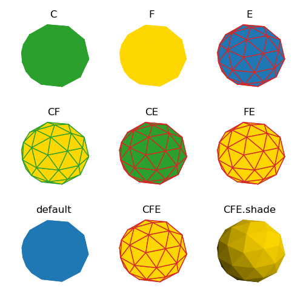
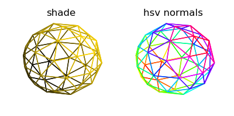

Face and Edge Colors¶
Solid Colors¶
The colors of surface faces and edges are setup during the object instantiation using the named argument assignments of color, facecolor, and edgecolor. With no assignments, the default color for faces and edges is the Matplotlib color ‘C0’. The assignment of three arguments can be made in several combinations and, at first, slightly confusing. From the Matplotlib Poly3DCollection code comments:
'''
Note that this class does a bit of magic with the _facecolors
and _edgecolors properties.
'''
The logic for how colors are assigned is:
- If color is not assigned, the color will be the ‘C0’ default color (blue).
- If facecolor is not assigned, facecolor will be the color.
- If edgecolor is not assigned, edgecolor will be the facecolor only if the color is not assigned, otherwise it will be the color.
Using three different colors for the three arguments, the eight combinations for assignment to a SphericalSurface are shown below. The most confusing is when edgecolor is not assigned, in which case it will take the value of the facecolor or color argument value ( F or CF ). In general, either use just facecolor or the combination of both facecolor and edgecolor to avoid unexpected results.
When the facecolors are changed after instantiation, either by colormap operations, colormapping normals or shading, the edgecolors will be reassigned. This is shown for the shading case where shading has been applied to the surface. If edges are to be shown, use the object method after shade:
surface.set_edgecolor(edgecolor)
The script to generate the above plots is given below.
import numpy as np
from matplotlib import pyplot as plt
import s3dlib.surface as s3d
# 2. Setup and map surfaces .........................................
rez = 1
C,F,E = 'C2', 'gold', 'C3'
surf_C = s3d.SphericalSurface( rez, color=C )
surf_F = s3d.SphericalSurface( rez, facecolor=F )
surf_E = s3d.SphericalSurface( rez, edgecolor=E )
surf_CF = s3d.SphericalSurface( rez, color=C, facecolor=F )
surf_CE = s3d.SphericalSurface( rez, color=C, edgecolor=E )
surf_FE = s3d.SphericalSurface( rez, facecolor=F, edgecolor=E )
surf_0 = s3d.SphericalSurface( rez )
surf_CFE = s3d.SphericalSurface( rez, color=C, facecolor=F, edgecolor=E )
surf_CFEs = s3d.SphericalSurface( rez, color=C, facecolor=F, edgecolor=E ).shade()
# 3. Construct figure, add surfaces, and plot .....................
title = [ 'C', 'F', 'E', 'CF', 'CE', 'FE', 'default', 'CFE', 'CFE.shade']
surf = [ surf_C, surf_F, surf_E, surf_CF, surf_CE, surf_FE, surf_0, surf_CFE, surf_CFEs ]
fig = plt.figure(figsize=(5,5))
minmax = (-.7,.7)
for i in range(9) :
ax = fig.add_subplot(331+i, projection='3d')
ax.set_axis_off()
ax.set(xlim=minmax, ylim=minmax, zlim=minmax )
ax.set_title(title[i])
ax.add_collection3d(surf[i])
fig.tight_layout()
plt.show()
Transparency¶
When the facecolor has an alpha channel value less than one, the edgecolor is not assigned the alpha and retains the full opacity. This effect is seen in the following plot for the first surface on the left. Even when the edgecolor is assigned transparent and shading applied, only the facecolor RGB channels are assigned to the edges. The edge alpha is set to one. This case is shown for the middle surface.
To hide the edges when using facecolor with a transparency, assign the linewidth to zero, as shown for the right surface.

The script fragment to generate the above plot is given below.
Fa = colors.to_rgba('gold',0.2)
Ea = colors.to_rgba('C3', 0.00)
surf_Fa_s = s3d.SphericalSurface( rez, color=Fa ).shade()
surf_FaEa_a = s3d.SphericalSurface( rez, facecolor=Fa, edgecolor=Ea ).shade()
surf_FaW0_a = s3d.SphericalSurface( rez, color=Fa, linewidth=0 ).shade()
To hide the faces but still apply shading or a color map to the edges, use the object method:
surface.set_facecolor(transparent_color)
where transparent_color is any color with the alpha channel set to zero.
Note
As described in the Hello World tutorial, edges can be displayed using the object property edges. However, only a solid color can be assigned to this property with the object constructor. Color variations are not available.
The script fragment to generate the above plot is given below.
surf_Fs = s3d.SphericalSurface( rez, color=F ).shade()
surf_Fs.set_facecolor([0,0,0,0])
surf_cmap = s3d.SphericalSurface( rez, color=F )
surf_cmap.map_cmap_from_normals('hsv')
surf_cmap.set_facecolor([0,0,0,0])